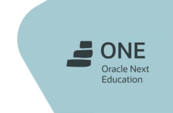

Sobre mim
Olá, que bom ver você por aqui! 😄
Eu sou Daniel Spósito Coelho, brasileiro, 25 anos, nascido e criado na cidade de São Paulo. Aos 17 anos ingressei na graduação e licenciatura em Filosofia na USP, uma etapa muito importante na minha vida, pois foi fruto de muito esforço e dedicação e me possibilitou experiências intelectuais e sociais inestimáveis e indeléveis.
Aos 23 comecei a lecionar filosofia em escolas públicas regulares em São Paulo, tais como as que eu havia estudado a maior parte de minha vida. Os anos como professor de Filosofia (e também tecnologia, inglês, entre outras disciplinas...) me ensinaram muito sobre confiança, trabalho em grupo, comunicação, empatia e aprendizagem. No entanto, sempre nutri o sonho de ter mais de poder ter mais de uma profissão, e foi na docência que descobri uma paixão pela tecnologia. Isso ocorreu depois que comecei a ministrar aulas sobre tecnologia para Ensino Fundamental e Médio, e também quando comecei a participar do PROATEC dentro da escola em que trabalhava (uma espécie de help-desk somado a projeto de letramento digital de professores e alunos).
Foi então que comecei a estudar programação por conta própria usando a internet (especialmente por meio do curso 'CS-50', na plataforma edX) e logo engressei no curso técnico de Desenvolvimento de Sistemas em uma ETEC. Após o primeiro semestre, decidido a percorrer esse novo caminho, encontrei o programa ONE, o qual me motivou a mergulhar em desenvolvimento web e que, com seus desafios, me fez evoluir de forma mais rápida. Atualmente estou montando meu portfolio de desenvolvedor Front-End, mas meu objetivo é estudar e trabalhar a ponto de me tornar um dev Full-Stack. Ao terminar o curso técnico pretendo ingressar em um curso superior na área de desenvolvimento de sistemas.
Skills
- HTML5
- CSS3
- Javascript
- PHP
- C#
-
 MySQL
MySQL
Hobbies
- Música
- Ler
- Conversas Filosóficas
- Tocar Guitarra
-
 Musculação
Musculação
- Aprender Línguas
Formação
-
Graduação e Licenciatura em Filosofia
2015 - 2020 -
Desenvolvimento de Sistemas (Técnico)
2021 - atualmente -

Programa ONE
2022 - atualmente
Projetos
-
CodeDec - Codificador/Decodificador de Texto
Challenge ONE (Oracle + Alura) Codificador -
Jogo da Forca
Challenge ONE (Oracle + Alura) Jogo Criado com HTML5, CSS3 e JS -
TCC - Etec
EM DESENVOLVIMENTO

Contato
Quer entrar em contato comigo?
Preencha o formulário ao lado e entrarei em contato o mais rápido possível